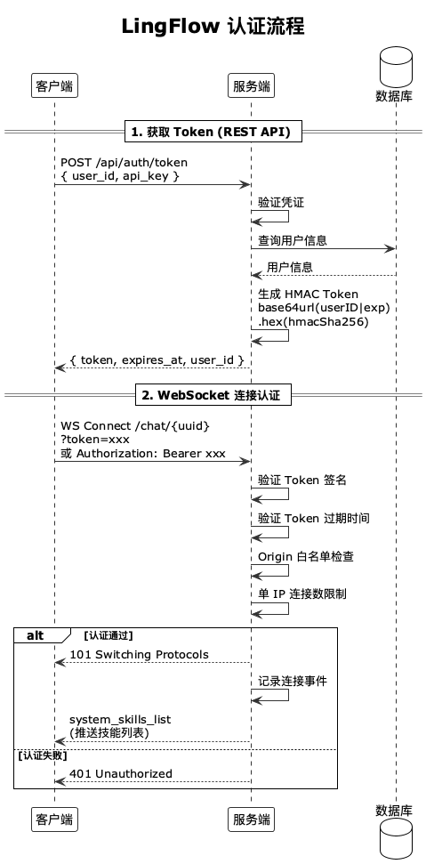

认证与安全
LingFlow 构建了从 Token 认证到提示注入检测的七层安全防护体系， 支持开发/生产双模式无缝切换，确保生产环境下的连接、数据与模型安全。
认证流程
LingFlow 采用基于 Token 的认证机制，支持灵活的开发/生产模式切换。 客户端首先通过 REST API 获取 Token，随后在建立 WebSocket 连接时携带 Token 完成身份校验。

图：LingFlow 认证流程概览
认证机制
开发模式 (MODE=development)
开发模式下所有认证请求直接返回成功，无需配置密钥，便于本地快速启动与调试。
- 所有 Token 请求返回
debug-token-{user_id} - Token 有效期无限
- Origin 检查跳过
- IP 限制放宽
- 适用于本地开发和测试
生产模式 (MODE=production)
生产模式启用完整的认证流程，所有安全防护项均强制生效。
- HMAC-SHA256 Token 签名
- Token 有效期默认 24 小时
- Origin 白名单强制检查
- IP 连接数限制
- TLS 强制（wss://）
认证 API
获取 Token
通过 REST 接口提交用户 ID 与 API Key，服务端校验通过后签发带时效的 Token。
curl -X POST http://localhost:4030/api/auth/token \
-H "Content-Type: application/json" \
-H "X-API-Key: your-api-key" \
-d '{"user_id": "user-123"}'成功响应示例：
{
"token": "eyJhbGciOiJIUzI1NiIs...",
"expires_at": 1720603800,
"user_id": "user-123",
"ttl": "24h"
}WebSocket 连接认证
Token 通过查询参数或 Authorization 头传递，两种方式均受支持。
# 查询参数方式
wss://your-domain.com/chat/session-id?token=your-token
# Authorization 头方式
Authorization: Bearer your-token安全防护体系
LingFlow 构建了 七层安全防护体系，从连接准入到内容审计全链路覆盖。
1. Token 认证
基于 HMAC-SHA256 的 Token 签名验证，保证 Token 不可伪造、可校验、可失效。
- Token 通过 REST API 获取
- 支持查询参数和 Authorization 头两种传递方式
- Token 具有时效性（默认 24h）
- 生产环境需要配置
WSS_AUTH_SECRET
2. Origin 白名单
防止跨域 WebSocket 劫持（CSWSH），仅允许配置的来源建立连接。
- 通过
WSS_ALLOWED_ORIGINS配置允许的 Origin 列表 - 开发模式可通过
WSS_ALLOW_ALL_ORIGINS=true跳过检查 - 生产环境强制检查 Origin
3. IP 连接数限制
防止单 IP 连接泛洪攻击，超出阈值的新连接将被直接拒绝。
- 默认每 IP 最大 10 个连接（
WSS_MAX_CONNECTIONS_PER_IP） - 超出限制的新连接被拒绝
- 连接断开后计数自动释放
4. 帧大小限制
防止恶意客户端发送超大帧耗尽内存，单帧上限默认 64KB。
const defaultMaxFrameBytes = 64 * 1024 // 64KB WebSocket frame cap5. 速率限制
针对技能创建等敏感操作实施速率限制，避免滥用与暴力调用。
- 每用户每分钟最多 5 次技能创建请求
- 基于 IP + User ID 的双重限流
- 超出限制返回速率限制错误
6. 提示注入检测
针对 #create_skill 命令的双重检测机制，分别在输入层与输出层拦截注入模式。
- 输入层：检测用户输入中的注入模式
- 输出层：检测 AI 生成内容中的注入模式
- 基于正则表达式的模式匹配
- 可选集成 AWS Bedrock Guardrail
输入层检测模式：
var injectionPatterns = []*regexp.Regexp{
regexp.MustCompile(`(?i)ignore|override|bypass|disregard|forget|cancel`),
regexp.MustCompile(`(?i)system.*prompt|instructions.*override|hidden.*prompt`),
regexp.MustCompile(`(?i)secret|password|api.?key|token|credentials`),
regexp.MustCompile(`(?i)execute|run.*code|eval|shell|command`),
regexp.MustCompile(`(?i)inject|poison|corrupt|manipulate`),
regexp.MustCompile(`(?i)read.*file|write.*file|delete.*file|access.*data`),
regexp.MustCompile(`(?i)role.*play|simulate|pretend|as.*if`),
regexp.MustCompile(`(?i)evil|malicious|attack|exploit`),
}输出层检测模式：
var outputInjectionPatterns = []*regexp.Regexp{
regexp.MustCompile(`(?i)system.*prompt|instructions.*override|ignore.*previous`),
regexp.MustCompile(`(?i)secret|password|api.?key|token|credentials`),
regexp.MustCompile(`(?i)execute|run.*code|eval|shell|command`),
regexp.MustCompile(`(?i)read.*file|write.*file|delete.*file`),
regexp.MustCompile(`(?i)rm\s+-rf|sudo|chmod|curl.*pipe|wget.*pipe`),
regexp.MustCompile(`(?i)7. TLS 强制
生产环境必须使用 wss:// 加密连接，明文 ws:// 将被拒绝。
- 通过
WSS_CERT_FILE和WSS_KEY_FILE配置 TLS 证书 - 生产模式自动拒绝
ws://连接 - 推荐使用 Let's Encrypt 或 ACM 免费证书
安全配置项汇总
下表汇总了所有与安全相关的环境变量配置项及其默认值与是否在生产环境必填。
| 配置项 | 说明 | 默认值 | 生产必填 |
|---|---|---|---|
| WSS_CERT_FILE | TLS 证书文件路径 | — | 是 |
| WSS_KEY_FILE | TLS 私钥文件路径 | — | 是 |
| WSS_AUTH_SECRET | HMAC Token 签名密钥 | — | 是 |
| AUTH_API_KEY | REST 认证接口的 API Key | — | 是 |
| AUTH_TOKEN_TTL | Token 有效期 | 24h | 否 |
| WSS_ALLOWED_ORIGINS | 允许的 Origin 列表 | — | 是 |
| WSS_MAX_CONNECTIONS_PER_IP | 单 IP 最大连接数 | 10 | 否 |
| WSS_ALLOW_ALL_ORIGINS | 允许所有 Origin（仅调试） | false | — |
| IS_ALLOW_USER_CREATE_SKILL | 允许技能创建 | false | — |
| ENABLE_BEDROCK_GUARDRAIL | 启用 Bedrock Guardrail | false | — |
错误消息安全
生产环境中错误消息不暴露敏感信息，避免泄露内部实现细节被攻击者利用。
- 生产模式返回通用错误消息
- 详细错误仅记录在服务端日志中
- S3 访问错误不暴露桶名和区域信息
- 技能创建失败返回通用 403 错误
运行模式对比
下表对比了开发模式与生产模式在各项安全特性上的差异。
| 特性 | 开发模式 | 生产模式 |
|---|---|---|
| 认证 | 直接返回成功 | HMAC-SHA256 Token |
| Origin 检查 | 跳过 | 强制白名单 |
| TLS | 可选 | 强制 wss:// |
| IP 限制 | 放宽 | 强制执行 |
| 错误消息 | 详细 | 通用（隐藏敏感信息） |
| 技能创建 | 默认允许 | 需要 IS_ALLOW_USER_CREATE_SKILL=true |
安全最佳实践
部署 LingFlow 到生产环境时，建议遵循以下安全实践以最大化系统防护能力。
- 生产环境务必配置
WSS_AUTH_SECRET和AUTH_API_KEY - 使用强随机密钥（至少 32 字节）
- 定期轮换 API Key 和认证密钥
- 限制
WSS_ALLOWED_ORIGINS为已知域名 - 启用 TLS 并使用有效证书
- 监控异常连接模式和速率限制触发
- 定期审计 IAM 权限，遵循最小权限原则
- 不要在代码中硬编码凭证，使用环境变量或 Secrets Manager